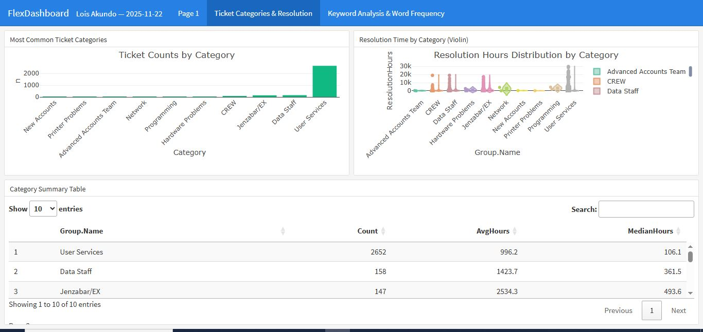
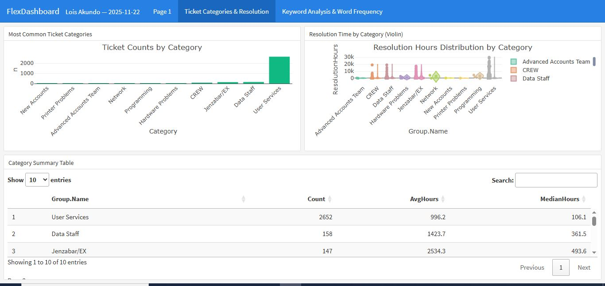
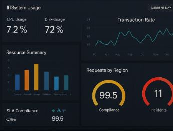
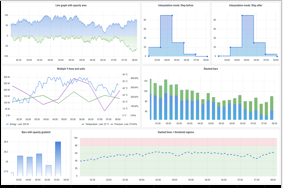
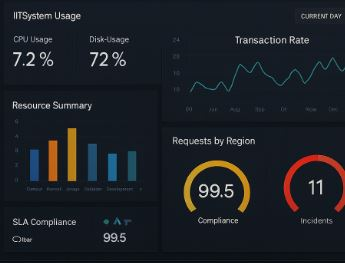
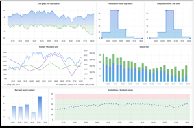
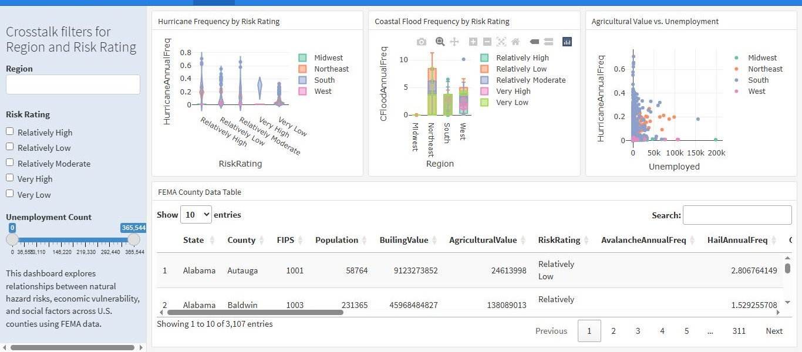
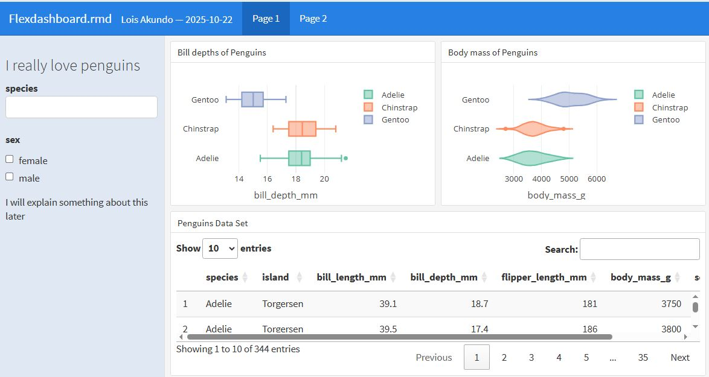
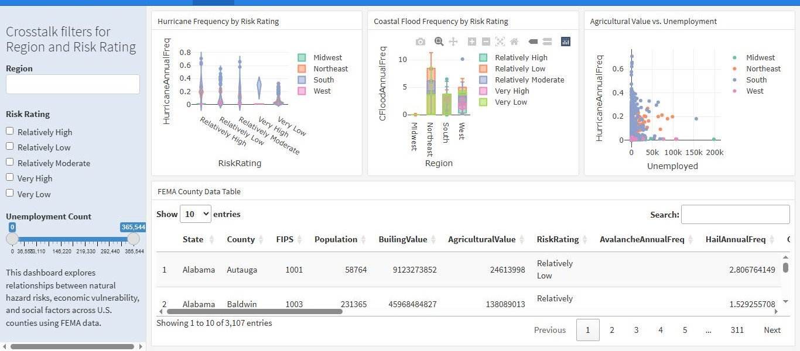
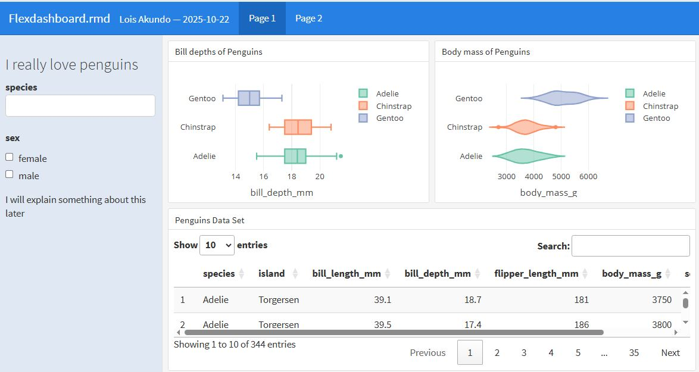

My Work
IT – IT & Data Science Crew Member
Supported campus data infrastructure and analytics needs, Maintained SQL dashboards and digital systems, Tutored students in data science and statistics.
- R
- SQL
- PostgreSQL
- Python
- HTML
 

PolicyCON – Data Analyst Intern
Created real-time dashboards in Grafana & Azure to visualize and monitor key policy metrics, configured PostgreSQL databases, and automated analysis workflows using Python & JupyterLab.
- Grafana
- Azure
- PostgreSQL
- Python
 



UNESCO – Biophilic Design Research
Analyzed student learning outcomes using surveys & interviews; visualized results with Python (Matplotlib, Pandas) and R; built an interactive website with JavaScript to showcase findings.
- Python
- R
- JavaScript
- Data Visualization


PARAGONE AI Externship
Applied AI-powered tools for interview analysis; processed and interpreted qualitative data with NLP and Git/GitHub collaboration; strengthened AI application & data handling skills.
- Natural Language Processing
- Git/GitHub
- AI Applications
 



Viable Edu – Fintech Apprenticeship Program
Studied financial markets and explored the role of technology in financial development. Participated in seminars with 50+ professionals and gained hands-on exposure to fintech concepts and applications.
- Fintech
- Financial Markets
- Seminar Participation
- Technology & Innovation
Collaborations & Programs


About Me
I’m a Data Science, IT & Business student at Warren Wilson College (expected 2026). I specialize in machine learning, data visualization, and applied analytics using R, Python, SQL, Grafana, and Azure. I’ve worked with organizations like UNESCO and PolicyCON, and I’m passionate about leveraging technology to solve real-world problems at the intersection of data and business.
My Resume Unofficial Transcript